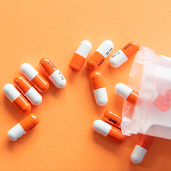

> 인재채용 > 복리후생
복리후생
롯데만의 특별한 혜택을 알려드립니다.
입사 후 혜택
- 입사
- - 대학졸업자 선물 지급
- - 패밀리 티켓 지급
- - 근로자의날/추석 포인트 지급
- - 자율복장출근
- - 장기근속자포상
- 결혼
- - 결혼축하금/화환배송
- - 결혼기념일 케익지급
- - 사내대출지원
- - 콘도 및 하기휴양소 지원
- 육아
- - 임산부 의자 지급
- - 자녀출산시 분유 지급
- - 육아휴직 복직자 선물
- - 유연 근무제 시행
- - 육아휴직 2년
- 의료지원
- - 입원치료비 지원
- - 정기 건강검진 지원
- - 45세이상 종합 건강검진 지원
- - 의료비지원(배우자,자녀포함)
- - 가족 돌봄 휴직
- 대학생
- - 수능 응원 선물지급
- - 학자금 지원
Welfare System
- 
- 건강증진프로그램
- 임직원 및 배우자 종합건강검진 실시를 통해 질병을 조기 발견하여 치료할 수 있도록 지원하며, 건강강좌를 비롯하여 금연/비만/근골격계 질환 예방 등 다양한 건강증진 프로그램을 운영하고, 독감 등 예방접종을 통해 사전에 질환을 예방할 수 있도록 관리하고 있습니다.
-
- 구성원상담프로그램(EAP)
- 2007년 부터 구성원들의 조직생활 및 개인생활의 문제를 외부전문가와 상담을 통해 해결할 수 있도록 지원하고 있습니다. 임직원과 그 가족들이 상담하고자 하는 대인관계 갈등, 스트레스 등 각종 고충과 재무설계, 자녀 인성 및 진로 등의 문제에 대해 전문가와 직접 상담할 수 있습니다.

- 선택적 복지제도 운영
- 임직원의 각각의 요구에 부응할 수 있도록 선택적 복지제도를 운영하고 있습니다. 선택적 복지제도란 임직원에게 일정 포인트(300만 포인트)를 지급하고 본인이 문화생활, 체육시설 등에서 사용한 후 회사 시스템(welcafe)에서 정산하는 방식으로, 이를 통해 임직원의 만족도를 높이고 있습니다.
-
- Work & Life Balance 추구
- 2주간의 리프레시(refresh) 휴가 제도 및 인재개발원, 전국 콘도미니엄 , 연중 휴양소 지원 등 건강한 휴식을 적극 지원하고 있습니다. 또한, 출산축하휴가(10일) 및 축하금(첫째 100만원, 둘째 150만원, 셋째 이상 200만원), 육아 휴직 및 단축근무, 수유실 설치, 유치원 교육비(1년간 120만 원) 및 어린이집 운영을 통하여 자녀 양육을 지원하고 있습니다. 더불어 구성원들이 80여 개의 동호회 활동을 통해 여가를 활용하고 있습니다.